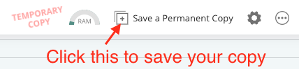
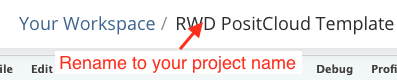
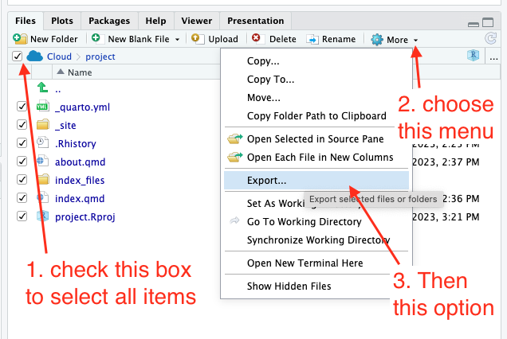

Appendix A — Using posit.cloud
If you are using the online version of RStudio called posit.cloud then there are some things that work differently than with the desktop version. This chapter is to designed to help with that.
A.1 Create a web project from our template
Since posit.cloud does not have an option to create a “Quarto Website” project, we have put together a template for you to start from.
Start posit.cloud if you haven’t already
Click on this link: RWD PositCloud Template
At the top of the browser window, there is a button to save the template as your own project called Save a Permanent Copy.

Rename your project right away so you don’t forget.

Update the
index.qmdfile with information about your project.Update your
_quarto.ymlfile as you wish.
The base packages should already be installed, so you should be good to add new Quarto Documents and Render them.
A.2 Exporting a project
You can export your project as a .zip file to turn in to an assignment or share with others.
- In the Files pane, click the box next to the Cloud icon to select all your files.
- Under the More gear there is a dropdown. Click on that.
- Choose Export from the More menu.

This should download all your files as a .zip file, which you can upload to Canvas.
A.4 Building a web project from scratch
If you can’t or don’t want to start with the template above (like you already have a project started), you can build your own Quarto Website.
A.4.1 Create your project
Start posit.cloud if you haven’t already
If you aren’t in a project already, create one. Use the New Project button and choose New RStudio project.
In your Console, copy and paste this command and run it.
install.packages(c("quarto", "rmarkdown", "tidyverse", "janitor"))It will take some time to run. Your internet connection will have an impact on the speed.
A.4.2 Create the Quarto file
- Use the new document toolbar button to create a Text file.
- Paste in the code below.
- Save the file and name it
_quarto.yml.
The name must be exact.
_quarto.yml
project:
type: website
website:
title: "Site name"
navbar:
left:
- href: index.qmd
text: Home
#- filename.qmd
format:
html:
theme: cosmo
toc: true
df-print: paged
code-overflow: wrapA.4.3 Create your index file
- Use the new document toolbar button to create a new Quarto Document
- For the Title field, use your project name, like “Billboard project”
- Uncheck the visual editor button.
- Immediately save the file and name it
index.qmd
At some point you’ll likely add a new file and want to replace filename.qmd with your filename and remove the # comment. You’ll can add other files there as you create them. This adds them to the website navigation. You can learn about website navigation in the Quarto Guide.
You should be good to go with a new project at this point. You can Render your index to see what the site looks like at this point.